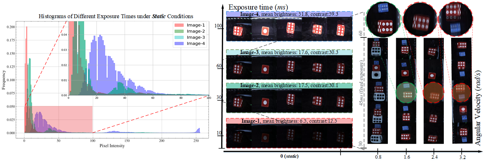
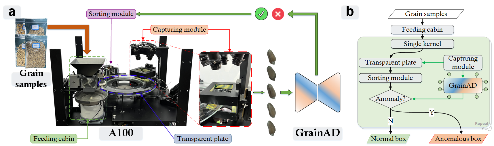
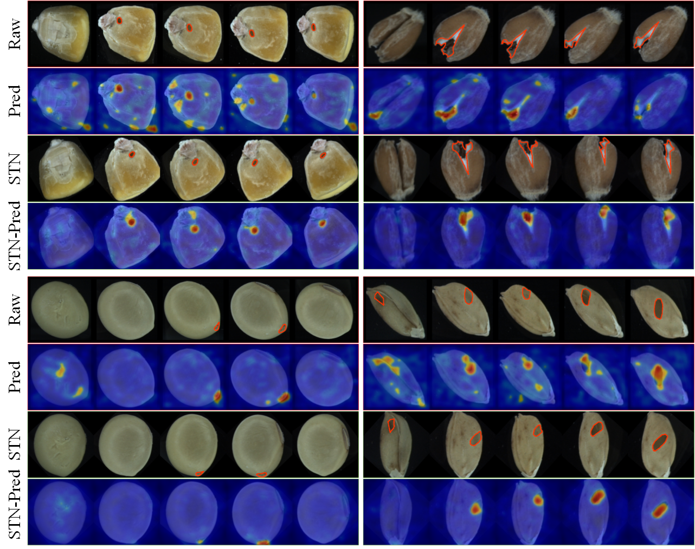

Examples of captured images with different exposure times and angular velocity.

The architecture of GrainAD.

The diagram and workflow of GrainBrain.

Grain Appearance Inspection (GAI) is crucial for evaluating grain quality and determining seed stratification. Typically, trained inspectors manually examine each grain kernel to identify and remove defective ones, which is time-consuming and error-prone. In this paper, we present GrainBrain, a robotic vision-based system comprising a hardware prototype (A100) and a deep learning model (GrainAD). A100 is equipped with five cameras to capture high-quality, multi-view images of each kernel. The identification of defective kernels is treated as an unsupervised anomaly detection task. GrainAD trains a classifier to distinguish between healthy and pseudo-anomaly samples generated at both image and feature levels, and a supervised contrastive learning loss is employed to obtain compact feature representations of healthy kernels. Additionally, we release a large-scale dataset containing over 100K annotated images of four types of cereal grains. Extensive experiments were conducted to verify the superiority of our system, achieving an average AUROC of 94.4/90.4% at the image/pixel level. Our system excelled in both efficiency and consistency, as demonstrated by experiments comparing human experts to the system.
The GrainBrain dataset provides a comprehensive collection of high-quality images for cereal grain inspection. It includes over 100K images captured from four types of grains: wheat, maize, soybean, and paddy. The dataset supports tasks such as anomaly detection.
For each type of cereal grains, we provide:
We report the statistical information about only train and test-image folders in the paper. When conducting the experiments, the image-level AUROC and pixel-level AUROC are reported using the test-pixel folder:
| Type | Train | Test-image-good | Test-image-bad | Test-pixel-good | Test-pixel-bad | Total Good | Total Bad | Total |
|---|---|---|---|---|---|---|---|---|
| Wheat | 30,000 | 10,000 | 10,000 | 1,800 | 1,800 | 41,800 | 11,800 | 53,600 |
| Maize | 18,000 | 6,000 | 6,000 | 1,500 | 1,500 | 25,500 | 7,500 | 33,000 |
| Soybean | 10,500 | 3,500 | 3,500 | 1,100 | 1,100 | 15,100 | 4,600 | 19,700 |
| Paddy | 6,000 | 2,000 | 2,000 | 1,000 | 1,000 | 9,000 | 3,000 | 12,000 |
The GrainBrain dataset is licensed under the Creative Commons BY-NC-SA 4.0 license. Note that All data must not be used for commercial purposes.
You can access the dataset using the figshare links below: